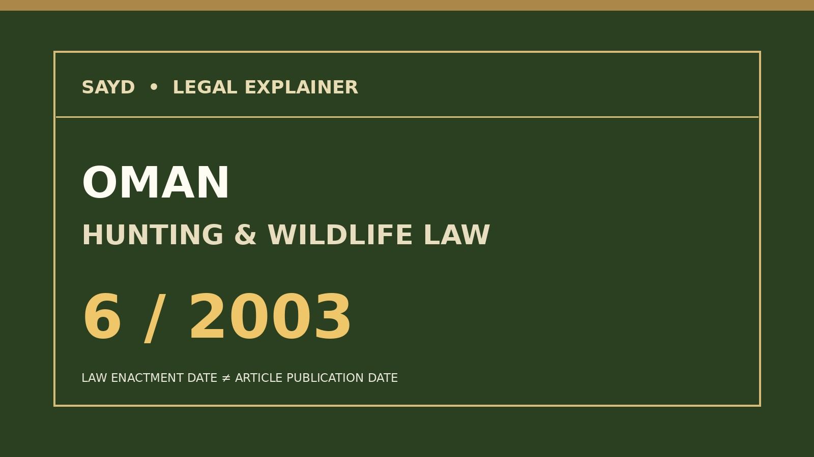

Royal Decree 6/2003 addresses reserves, protected species, permits, enforcement and confiscation.

Oman's legal safeguards for wildlife go beyond opening and closing hunting seasons. The Nature Reserves and Wildlife Conservation Law issued by Royal Decree 6/2003 on 8 January 2003 provides a framework for protected species, nature reserves, permits and enforcement.
The law defines hunting broadly to include deliberate capture, immobilisation, killing or attempted capture of wildlife. Under Article 14, a permit is required for hunting, keeping, breeding or transferring protected animals or their offspring inside or outside a nature reserve. Further permission requirements govern collecting specimens and possession of protected wildlife material.
The first statutory schedule lists the houbara bustard among specially protected animals and birds. The second includes groups such as falcons, owls, eagles and vultures. Penalty provisions distinguish offences involving the protected schedules and provide for confiscation of wildlife, gear and vehicles used in violations.
Article 13 also distinguishes zones within reserves: certain compatible recreational activities may be allowed in designated public areas, while access to stricter protection zones requires permission.
The underlying law dates to 2003. This is a 2026 editorial explanation of that instrument, not a claim of new legislation. Readers should consult the responsible authorities for subsequent amendments and current implementing measures.
Original official texts: Oman's Ministry of Justice and Legal Affairs, Royal Decree 6/2003, particularly Articles 1, 13–17 and the appendices.